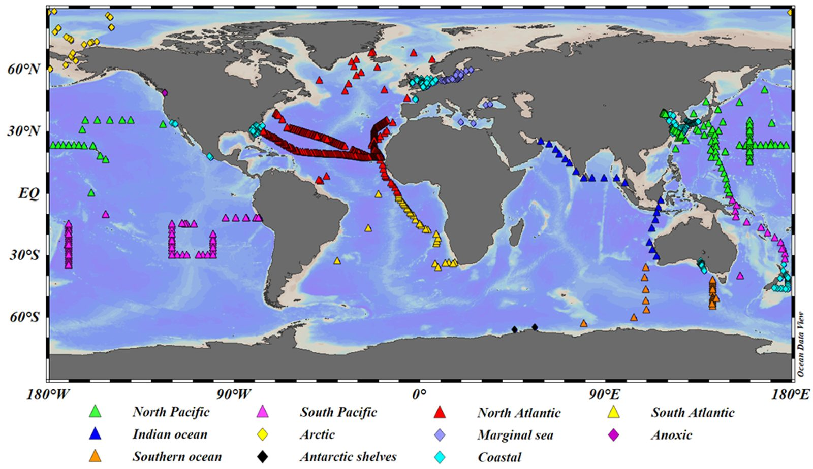
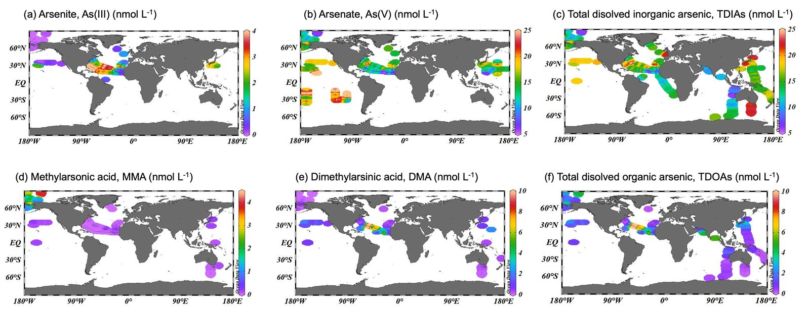

Awarded the Earth Science and Engineering Centenary Prize, Imperial College London, June 2021, for the highest-scoring MSci thesis of the year.
Thesis overview
Inorganic arsenic is toxic to marine life, especially phytoplankton, yet how arsenic moves through the oceans has remained poorly understood because its chemistry is complicated (it exists as several inorganic and methylated species) and because measurements were scattered across many separate studies. For my MSci thesis I set out to change that by gathering everything that had been measured into one place and building the first model of how arsenic species cycle through the global ocean.


Aim
To assess the change in dissolved arsenic concentrations in the oceans since the Industrial Revolution.
Objectives
- 1Build a global dataset
Produce the first comprehensive global dataset of arsenic species in the oceans, and use it to describe their distribution and depth profiles.
- 2Model the marine arsenic cycle
Develop a quantitative model of the biogeochemical cycle of arsenic species, built around the key reactions and processes that govern it: methylation and demethylation by microbes, oxidation of arsenite by iron–manganese oxide particles, and scavenging, regeneration and sinking of arsenic on particles.
- 3Evaluate the human fingerprint
Use a global box model to assess how anthropogenic emissions have changed dissolved arsenic in the oceans over time, and where concentrations are heading.
What I found
The compiled dataset and model showed that arsenic entering the ocean currently exceeds arsenic leaving it, so the ocean is no longer in steady state with respect to arsenic. The global average dissolved arsenic concentration was estimated at about 21.5 nmol L−1, compared with a pre-industrial value of about 19.4 nmol L−1, and the model suggested it will continue to rise toward a new steady state of roughly 24.7 nmol L−1 over tens of thousands of years. The model also provided first estimates of several rate constants that had never been measured, including demethylation by bacteria in the deep ocean and oxidation of arsenite by Fe–Mn oxide particles.
This project was where my interest in how human activity changes the chemistry of the environment first took shape, and it led directly to my later work on iron and acidity in polluted aerosol.